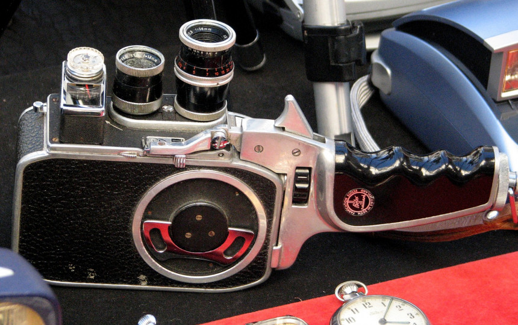
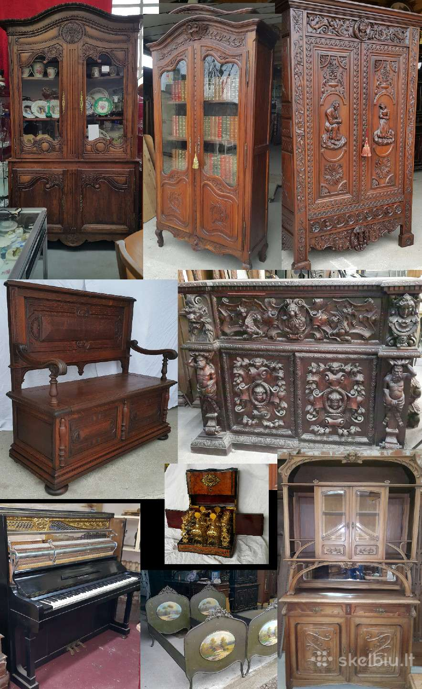
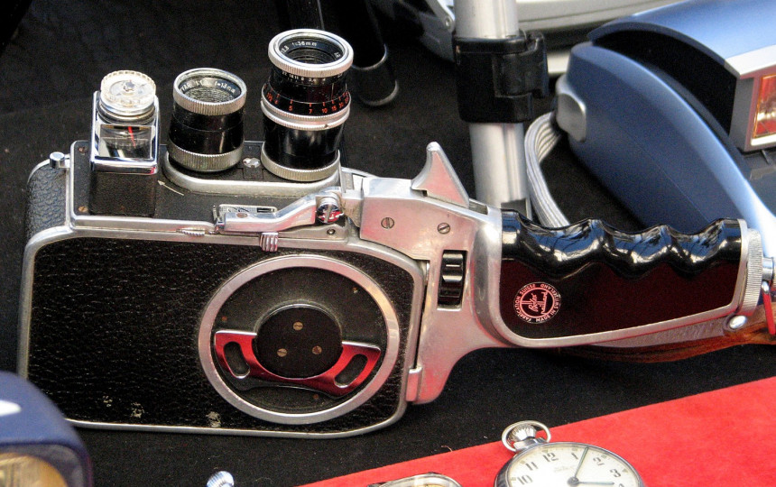
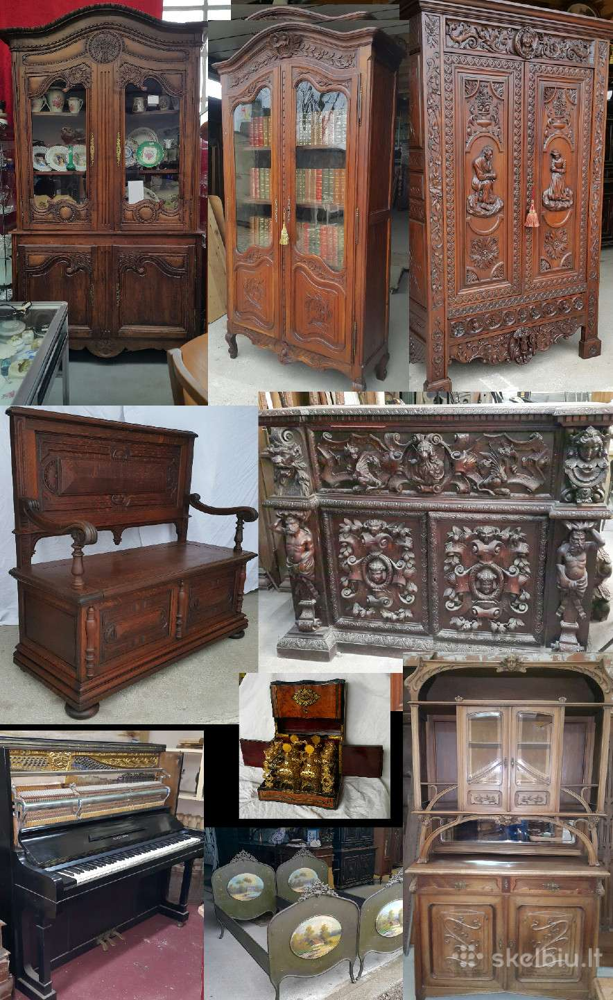

AntikvariniaiBaldai.LT - antikvariniai ir senoviniai baldai
2020.10.30 04:30
Facebook Baldų restauravimo paslaugos Straipsniai Kontaktai Svetainės baldai Minkšti komplektai Stalai ir kėdės Minkštasuoliai Krėslai ir foteliai Staliukai ir konsolės Komodos ir sekreterai Indaujos ir bufetai Miegamojo baldai Miegamojo komplektai Lovos Komodos Spintos Darbo kambario baldai Komplektai Rašomieji stalai Krėslai Knygų spintos ir sekreterai Sendaikčiai Laikrodžiai Paveikslai Šviestuvai Kiti daiktai 0 MENU
Naujausios prekės
Akcija! ParduotaAntikvarinė kabykla
490 € 330 € Prekės kodas: KI101Antikvarinė žvakidė
435 € Prekės kodas: KI151Senovinė dėžutė papuošalams
255 € Prekės kodas: KI129Antikvarinė spinta
530 € Prekės kodas: AK518Antikvarinis svetainės baldų komplektas
750 € Prekės kodas: KAL466Antikvarinė lova su komodėle
725 € Prekės kodas: AK502Akcijinės prekės
Akcija! ParduotaAntikvarinė kabykla
490 € 330 € Prekės kodas: KI101 Akcija!Antikvariniai foteliai
560 € 490 € Prekės kodas: KAL419 Akcija!Antikvarinis kosmetinis staliukas
490 € 390 € Prekės kodas: KLA301 Akcija! ParduotaAntikvarinės kėdės
390 € 350 € Prekės kodas: KLA555 Akcija!Antikvarinis minkštasuolis
315 € 280 € Prekės kodas: KLA561 Akcija!Antikvarinis valgomojo baldų komplektas
950 € 890 € Prekės kodas: KLA531Naujienlaiškio prenumerata
AntikvariniaiBaldai.LT
Pagrindinė mūsų veiklos kryptis – prekyba antikvariniais ir senoviniais baldais. Paverskite savo namus išskirtiniais ir unikaliais. Tam įgyvendinti siūlome Jums antikvarinius baldus, kurie namuose sukurs išskirtinį stilių ir interjerą. Pamirškite nusistatymus, jog antikvariniai baldai stovi tik muziejų salėse, siūlome Jums savo namuose taip pat įkurdinti šiek tiek iškalbingos praeities.
Antikvarinių baldų pardavime bei restauravime dirbame jau daugiau kaip 20 metų ir tai leidžia pasiūlyti klientams optimaliausius sprendimus. Dėl ilgametės sėkmingos veiklos šiandien jau glaudžiai bendradarbiaujame su didžiausiais Europos antikvariatais , kurie naujas prekes tiekia kiekvieną savaitę.
Kiekvienas klientas mūsų salone ras, ką išsirinkti. Ilgus metus saugoję AntikvariniaiBaldai.LT idėją ir kryptį, siūlome ir toliau remtis ilgamete patirtimi bei pasikliauti mūsų specialistais. Mes galime Jums patarti, kaip prie Jūsų namų išplanavimo ir interjero pritaikyti senovinius baldus ir namams įkvėpti naujo įspūdžio. Ieškantiems unikalių sprendimų, visuomet turime pasiūlyti kažką naujo ir netikėto.
Kreipkitės į mus, jei prisireikė atnaujinti namus ar norite šio to senoviškai naujo. Pamirškite, kad antikvariatai tai senienos – nes tai baldai, galintys suteikti Jūsų namams išskirtinio žavesio ir jaukumo.
Straipsniai
Antikvariniai baldai išlavinto skonio ženklas
2014/04/22Senoviniai svetainės baldai padės sukurti norimą namų stilių
2014/04/22 Visi straipsniai Baldų katalogas Informacija apie užsakymą Prekių krepšelis Straipsniai Kontaktai eMisija LT - interneto svetainių kūrimas © AntikvariniaiBaldai.lt Svetainės baldai Minkšti komplektai Stalai ir kėdės Minkštasuoliai Krėslai ir foteliai Staliukai ir konsolės Komodos ir sekreterai Indaujos ir bufetai Miegamojo baldai Miegamojo komplektai Lovos Komodos Spintos Darbo kambario baldai Komplektai Rašomieji stalai Krėslai Knygų spintos ir sekreterai Sendaikčiai Laikrodžiai Paveikslai Šviestuvai Kiti daiktai Baldų restauravimo paslaugos Straipsniai Kontaktai FacebookIeškoti produktų
Produktų kategorijos
Pasirinkite kategoriją Darbo kambario baldai Knygų spintos ir sekreterai Komplektai Krėslai Rašomieji stalai Miegamojo baldai Komodos Lovos Miegamojo komplektai Spintos Sendaikčiai Kiti daiktai Laikrodžiai Paveikslai Šviestuvai Svetainės baldai Indaujos ir bufetai Komodos ir sekreterai Krėslai ir foteliai Minkštasuoliai Minkšti komplektai Stalai ir kėdės Staliukai ir konsolėsKrepšelis
Svetainės baldai Minkšti komplektai Stalai ir kėdės Minkštasuoliai Krėslai ir foteliai Staliukai ir konsolės Komodos ir sekreterai Indaujos ir bufetai Miegamojo baldai Miegamojo komplektai Lovos Komodos Spintos Darbo kambario baldai Komplektai Rašomieji stalai Krėslai Knygų spintos ir sekreterai Sendaikčiai Laikrodžiai Paveikslai Šviestuvai Kiti daiktai 0 AntikvariniaiBaldai.LT FacebookSužinokite naujienas pirmi!
Nepraleiskite progos sužinoti apie naujas baldų siuntus, mūsų akcijas ir kitą svarbią informaciją.
- Antikvariniai daiktai • Oldtimers forumas
- Antikvariniai Vintage Retro daiktai - Parduodunaudota.lt
- Antikvariniai daiktai Rugsėjis 2020
- antikvariniai daiktai skelbimai | Skelbimai.lt - nemokami ...
- Antikvariniai ginklai I Ginklu parduotuve I Karinis I ...
- Antikvariniai daiktai ir kolekcionavimas: žinynai ...
- AntikvariniaiBaldai.LT - antikvariniai ir senoviniai baldai
- Senoviniai, antikvariniai daiktai, dekoro detalės ...
- antikvariniai daiktai skelbimai - Skelbiu.lt
- SENOVĖS PRABANGA – Prekyba senoviniais ir antikvariniais ...
- Antikvariniai daiktai • Oldtimers forumas
Antikvariniai daiktai 1) Skyrelyje „Perku / Parduodu senienas, antikvarinius daiktus“ talpinami skelbimai ir aukcionai. Šiame skyrelyje vyksta prekyba tik daiktais: interjeras, buitiniai rakandai, ekipuotė, plokštelės, monetos ir t.t. Amžiaus cenzas 30 metų.
- Antikvariniai Vintage Retro daiktai - Parduodunaudota.lt
forume Antikvariniai daiktai. Paskutinis pranešimas: 2019 Gru 04 Tre, 10:29. Paulyx Neatsakyta Apranga? forume Antikvariniai daiktai. Paskutinis pranešimas: 2019 Gru 03 Ant, 0:01. Paulyx Detalė. forume Antikvariniai daiktai. Paskutinis pranešimas: 2019 Geg 09 Ket, 14:42. Tadas_2. Kokį kondensatorių naudoti? forume Antikvariniai daiktai ...
- Antikvariniai daiktai Rugsėjis 2020
Antikvariniai daiktai Kiekvienas gyvenimas turi savo asmeninę didelę šventę, tačiau taip pat yra bendras vieningas, linksmas - Naujųjų metų! Pagrindinė jo puošmena jau seniai buvo Kalėdų eglutė, ji pasirodė namuose su caro Petro įsakymais, ir tai jau šimtmetis, kad mus laimingi.
- antikvariniai daiktai skelbimai | Skelbimai.lt - nemokami ...
Antikvariniai, kolekciniai bei kiti senoviški, tarybiniai daiktai, senoviniai, antikvariniai baldai, lietuviški sendaikčiai. Visa informacija (daugiau daiktų, nuotraukos bei KAINOS) tinklapyje: www.antikvaraskaune.lt Tinklalapis nuolat atnaujinamas. Siunčiu ir į kitus miestus Jums patogiu būdu.
- Antikvariniai ginklai I Ginklu parduotuve I Karinis I ...
Gal ką sudomintų senoviniai tarybiniai staliniai laikrodžiai. Patvarkius galėtų tikti interjerui ar kolekcionavimui kaip antikvariniai daiktai. Kaina po 3-4 Eur už vieną. Kreiptis Kaune: tel. 8(37)727735.
- Antikvariniai daiktai ir kolekcionavimas: žinynai ...
Antikvariniai daiktai ir kolekcionavimas: knygos, rankraščiai, įv. spaudiniai (anglų k.) Antikvariniai daiktai ir kolekcionavimas: paveikslai, meno spaudiniai ir žemėlapiai (anglų k.) Antikvariniai daiktai ir kolekcionavimas: žaislai, žaidimai, lėlės ir modeliukai (anglų k.)
- AntikvariniaiBaldai.LT - antikvariniai ir senoviniai baldai
Kolekcionavimo forumai, straipsniai, diskusijos apie kolekcionavimą ir asmeninės kolekcijos sudarymą, eksponavimą, naujienos, įvairūs apmąstymai apie kolekcionavimo tendencijas pasaulyje ir Lietuvoje
- Senoviniai, antikvariniai daiktai, dekoro detalės ...
6. Antikvariniai daiktai išlaiko arba padidina vertę. Gerai prižiūrimų antikvarinių daiktų vertė laikui bėgant didėja. Nors kainos kyla ir krenta (beje daugelis ekspertų sako, kad dabar yra geriausias laikas investuoti į senovinius daiktus), antikvariniai daiktai yra gera investicija.
- antikvariniai daiktai skelbimai - Skelbiu.lt
5 antikvariniai daiktai, kurie privers patikėti vaiduokliais: Elektrinė kėdė. Tai buvo kėdė nepanaši į jokią kitą kėdę. Vienas žmogus užėjo į antikvarinių daiktų parduotuvę. Parduotuvėje jis ranka užkliudė kėdę ir pajuto, kad plaukeliai ant jo rankos pasistojo piestu, tarsi kėdė būtų turėjusi kokį nors elektros ...
- SENOVĖS PRABANGA – Prekyba senoviniais ir antikvariniais ...
Antikvariniai baldai, sendaikčiai ir interjero detalės Jūsų namams. Pristatome į namus visoje Lietuvoje. Žiūrėkite mūsų antikvarinių baldų katalogą.
Antikvariniai daiktai 1) Skyrelyje „Perku / Parduodu senienas, antikvarinius daiktus“ talpinami skelbimai ir aukcionai. Šiame skyrelyje vyksta prekyba tik daiktais: interjeras, buitiniai rakandai, ekipuotė, plokštelės, monetos ir t.t. Amžiaus cenzas 30 metų.
forume Antikvariniai daiktai. Paskutinis pranešimas: 2019 Gru 04 Tre, 10:29. Paulyx Neatsakyta Apranga? forume Antikvariniai daiktai. Paskutinis pranešimas: 2019 Gru 03 Ant, 0:01. Paulyx Detalė. forume Antikvariniai daiktai. Paskutinis pranešimas: 2019 Geg 09 Ket, 14:42. Tadas_2. Kokį kondensatorių naudoti? forume Antikvariniai daiktai ...
Antikvariniai daiktai Kiekvienas gyvenimas turi savo asmeninę didelę šventę, tačiau taip pat yra bendras vieningas, linksmas - Naujųjų metų! Pagrindinė jo puošmena jau seniai buvo Kalėdų eglutė, ji pasirodė namuose su caro Petro įsakymais, ir tai jau šimtmetis, kad mus laimingi.
Antikvariniai, kolekciniai bei kiti senoviški, tarybiniai daiktai, senoviniai, antikvariniai baldai, lietuviški sendaikčiai. Visa informacija (daugiau daiktų, nuotraukos bei KAINOS) tinklapyje: www.antikvaraskaune.lt Tinklalapis nuolat atnaujinamas. Siunčiu ir į kitus miestus Jums patogiu būdu.
Gal ką sudomintų senoviniai tarybiniai staliniai laikrodžiai. Patvarkius galėtų tikti interjerui ar kolekcionavimui kaip antikvariniai daiktai. Kaina po 3-4 Eur už vieną. Kreiptis Kaune: tel. 8(37)727735.
Antikvariniai daiktai ir kolekcionavimas: knygos, rankraščiai, įv. spaudiniai (anglų k.) Antikvariniai daiktai ir kolekcionavimas: paveikslai, meno spaudiniai ir žemėlapiai (anglų k.) Antikvariniai daiktai ir kolekcionavimas: žaislai, žaidimai, lėlės ir modeliukai (anglų k.)
Kolekcionavimo forumai, straipsniai, diskusijos apie kolekcionavimą ir asmeninės kolekcijos sudarymą, eksponavimą, naujienos, įvairūs apmąstymai apie kolekcionavimo tendencijas pasaulyje ir Lietuvoje
6. Antikvariniai daiktai išlaiko arba padidina vertę. Gerai prižiūrimų antikvarinių daiktų vertė laikui bėgant didėja. Nors kainos kyla ir krenta (beje daugelis ekspertų sako, kad dabar yra geriausias laikas investuoti į senovinius daiktus), antikvariniai daiktai yra gera investicija.
5 antikvariniai daiktai, kurie privers patikėti vaiduokliais: Elektrinė kėdė. Tai buvo kėdė nepanaši į jokią kitą kėdę. Vienas žmogus užėjo į antikvarinių daiktų parduotuvę. Parduotuvėje jis ranka užkliudė kėdę ir pajuto, kad plaukeliai ant jo rankos pasistojo piestu, tarsi kėdė būtų turėjusi kokį nors elektros ...
Antikvariniai baldai, sendaikčiai ir interjero detalės Jūsų namams. Pristatome į namus visoje Lietuvoje. Žiūrėkite mūsų antikvarinių baldų katalogą.
 


